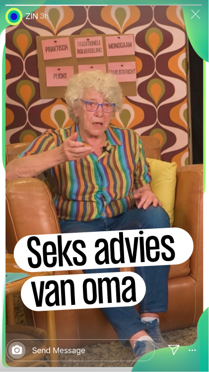
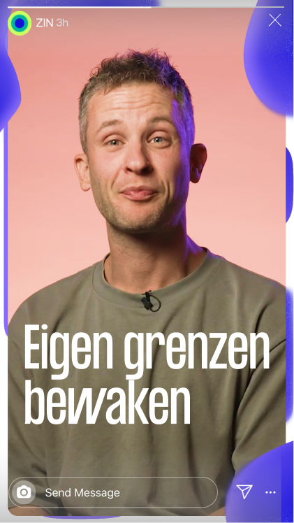
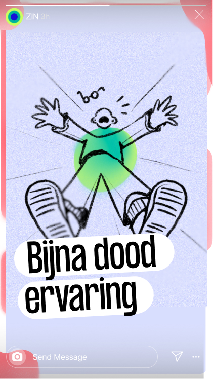

Van tv-programma naar social merk
Voor KRO-NCRV hielpen we Zin in Morgen de stap van tv naar social te maken. Daarbij onderzochten we wat die overgang precies betekent voor het merk. Dat leidde niet alleen tot een nieuwe branding die de redactie direct kan gebruiken in hun dagelijkse social content, maar uiteindelijk zelfs tot een naamswijziging.
De uitdaging
Zin in Morgen was een televisieprogramma over zingeving. Met de overstap naar social wilde het team een jonger en breder publiek bereiken, zonder de inhoudelijke kern kwijt te raken.
De vraag was dus groter dan hoe het merk eruit moest zien op Instagram of TikTok: wat is het merk wanneer televisie niet langer het vertrekpunt is?
/1%20onder%20uitdaging.jpg)
/1%20onder%20uitdaging%202.jpg)
Ons inzicht
De overstap naar social gaf ruimte om het merk te verbreden. Het bestaande Zin in Morgen zat sterk aan de kant van zingeving: reflectie, betekenis en verdieping. Op social mocht daar meer zin in het leven tegenover staan: energie, plezier en het alledaagse. Juist die ruimte tussen die twee bleek interessant: Niet oppervlakkig, maar ook niet altijd zwaar.



Onze keuze
In een gezamenlijke sessie legden we verschillende richtingen, voorbeelden en moodboards naast elkaar. Zo maakten we samen concrete keuzes over wat bij ZIN! past en wat niet. Die keuzes gaven ons de richting om de nieuwe identiteit verder te ontwikkelen.
Veeg over de balk om de matrix te bekijken.
Wat we maakten
Vanuit twee visuele richtingen werkten we toe naar één identiteit die inhoudelijke verdieping én lichtheid kon dragen.
Binnen twee weken vertaalden we die richting naar een complete nieuwe huisstijl: typografie, kleur, illustratie, grafische principes en motion.
/5%20maakten%20-%20%20huisstijl/1.jpg)
/5%20maakten%20-%20%20huisstijl/2.jpg)
/5%20maakten%20-%20%20huisstijl/3.jpg)
/5%20maakten%20-%20%20huisstijl/4.jpg)
/5%20maakten%20-%20%20huisstijl/5.jpg)
/5%20maakten%20-%20%20huisstijl/6.jpg)
/5%20maakten%20-%20%20huisstijl/6-2.jpg)
/5%20maakten%20-%20%20huisstijl/7.jpg)
/5%20maakten%20-%20%20huisstijl/8.jpg)
/5%20maakten%20-%20%20huisstijl/9.jpg)
Die legden we vast in een huisstijlhandboek, met duidelijke regels en voorbeelden voor het gebruik van de identiteit. Daarnaast ontwikkelden we templates waarmee de redactie zelf nieuwe social content kan maken.
Voor losse producties maken we binnen diezelfde stijl illustraties en visuele uitingen op maat. Zo hoeft niet alles er hetzelfde uit te zien om toch direct als ZIN! herkenbaar te zijn.
Het effect
ZIN! heeft daarmee niet alleen een nieuwe uitstraling die past bij de nieuwe doelgroep. Maar ook een visueel systeem waarmee de redactie zelf verder kan.
Het huisstijlhandboek en de templates zorgen voor houvast in het dagelijks gebruik, terwijl de beeldtaal genoeg vrijheid geeft om voor nieuwe onderwerpen, producties en formats steeds iets eigens te maken.
Eén herkenbaar merk, met ruimte voor verschillende verhalen.
/7%20onder%20effect%20-%20overlay.png)